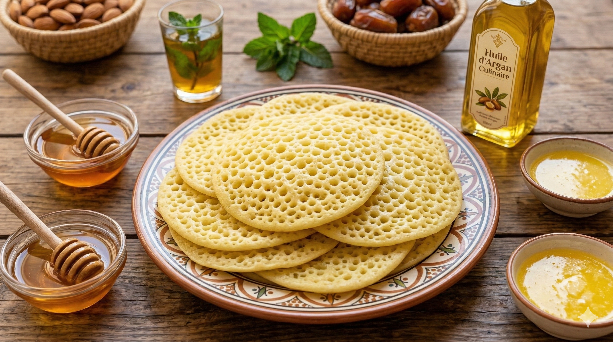

Tajine d'Agneau aux Pruneaux
Plat emblématique marocain : agneau tendre mijoté avec pruneaux, amandes grillées et mélange d'épices traditionnelles.

Couscous aux Sept Légumes
Couscous traditionnel berbère accompagné de sept légumes de saison, pois chiches et bouillon parfumé.
Ingrédients principaux
Astuce berbère : Le secret : mijoter à feu doux pour une viande fondante.
Ingrédients principaux
Astuce berbère : Servir le vendredi, jour traditionnel du couscous au Maroc.

Fruits de Mer Grillés d'Agadir
Assortiment de poissons frais, crevettes et sardines grillées, pêchés le matin même dans l'Atlantique.

Baghrir (Crêpes Mille Trous)
Crêpes légères et aérées aux mille petits trous, servies avec beurre fondu et miel d'arganier.
Astuce berbère : Les trous se forment naturellement pendant la cuisson.

Huile d'Argan Culinaire
Or liquide du Maroc, huile précieuse extraite des arganiers du Souss, au goût de noisette unique.

Amlou
Pâte d'amandes traditionnelle mélangée à l'huile d'argan, servie avec du pain frais. Un délice authentique de la région.
Méthode de Préparation
- Torréfier les amandes à feu moyen jusqu'à ce qu'elles soient dorées
- Moudre les amandes torréfiées jusqu'à obtenir une pâte fine
- Ajouter l'huile d'argan progressivement en mélangeant
- Ajouter le miel et mélanger jusqu'à obtenir une consistance homogène
- Servir avec du pain frais ou des crêpes
Restaurants Recommandés
Restaurant Dar Souss
Cuisine traditionnelle berbère
Agadir - Marina d'Agadir
Le Jardin d'Argan
Plats aux produits d'argan
Taroudant - Près de la place Assarag
Port de Pêche
Fruits de mer ultra-frais
Agadir - Port d'Agadir
Riad Maryam
Tajines authentiques
Tiznit - Médina de Tiznit
Réservez une Expérience Culinaire
Participez à un atelier de cuisine berbère ou réservez une table dans nos meilleurs restaurants